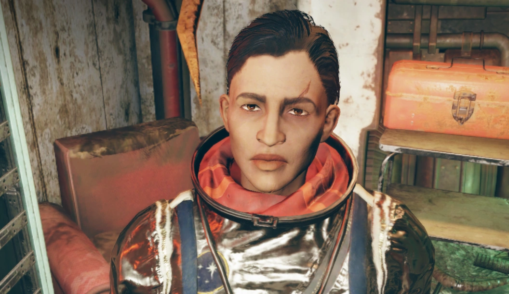
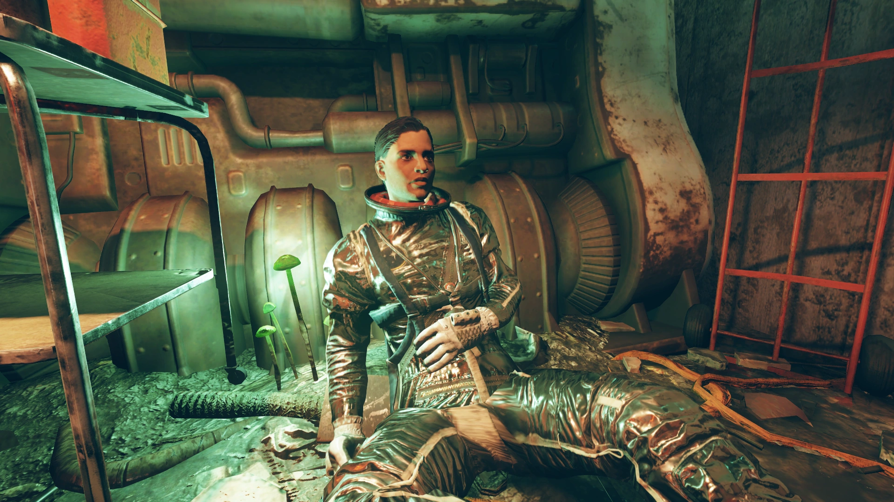
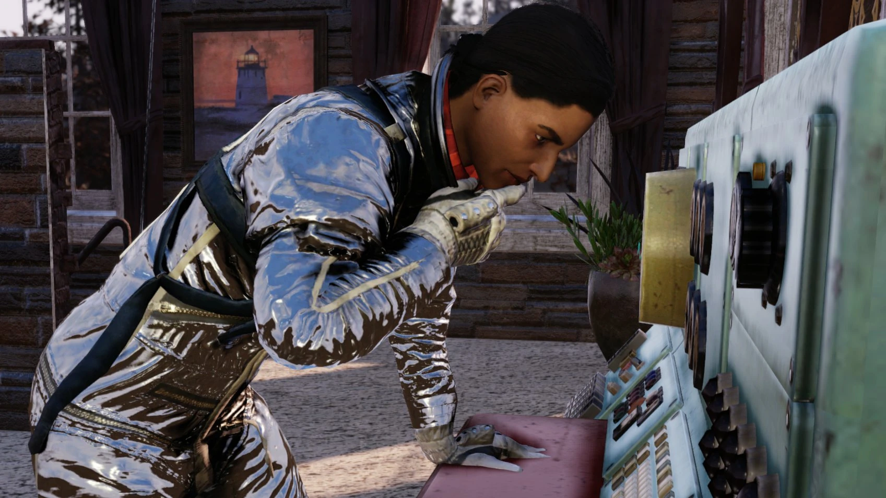
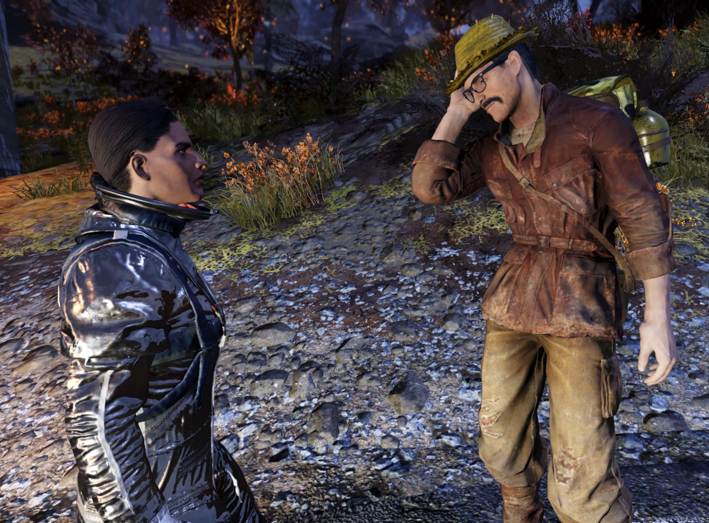
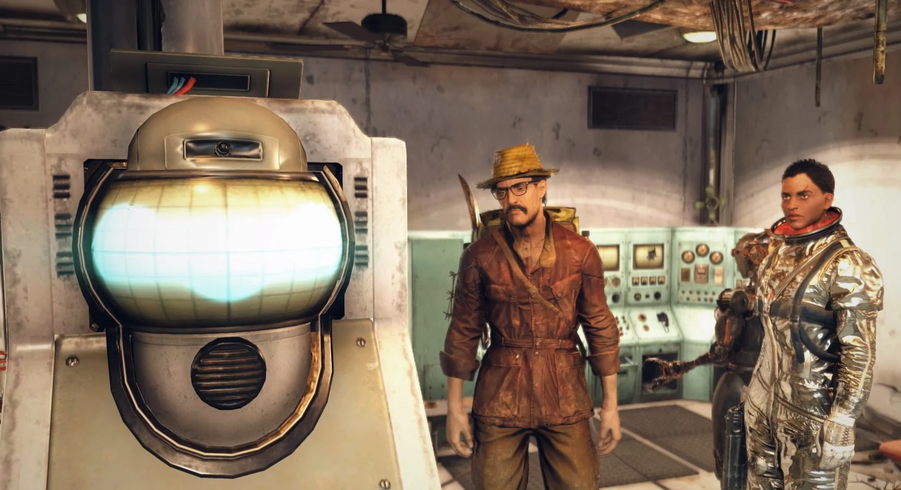
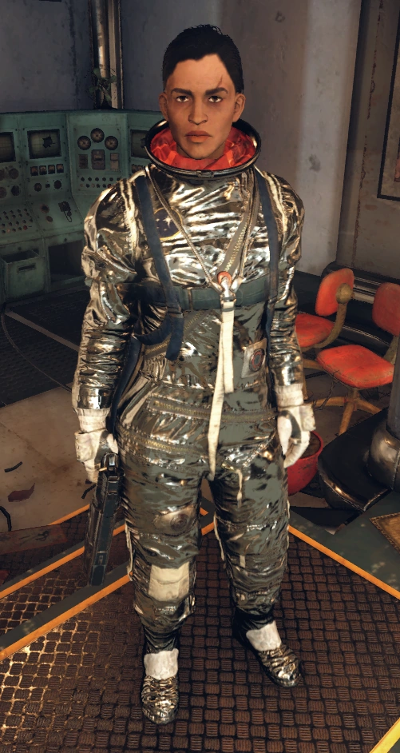
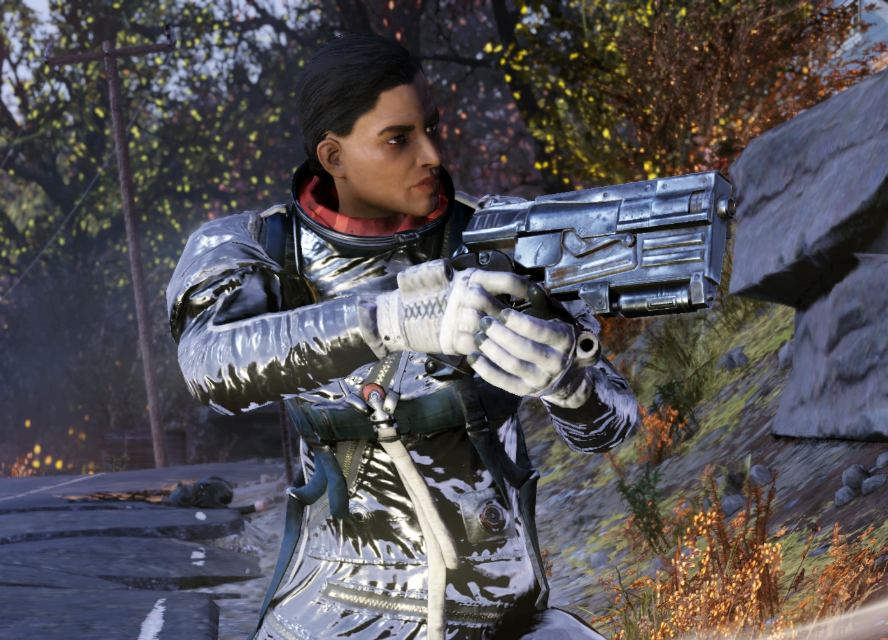
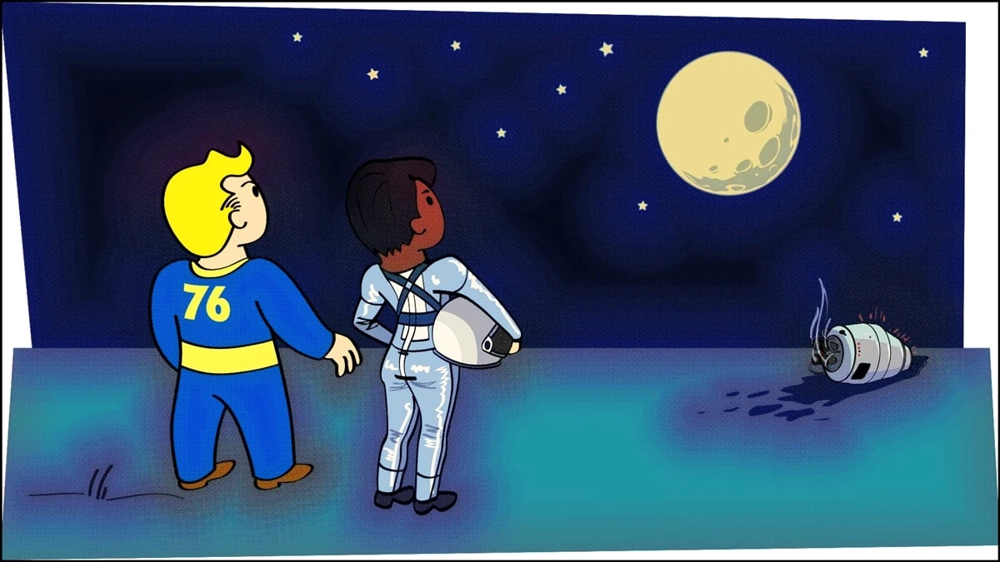
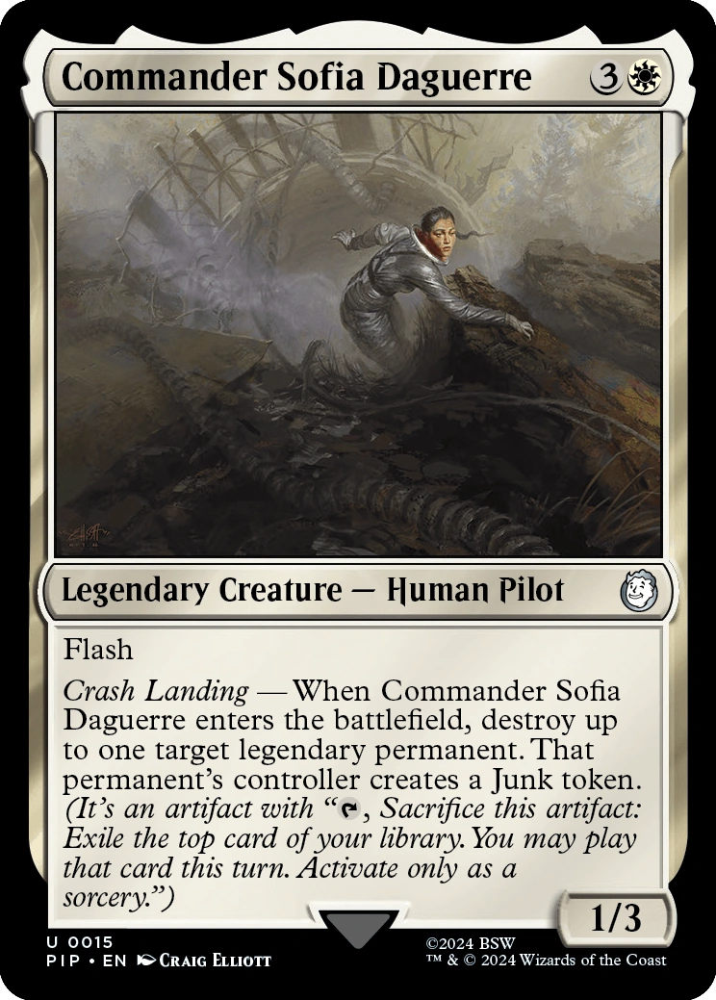
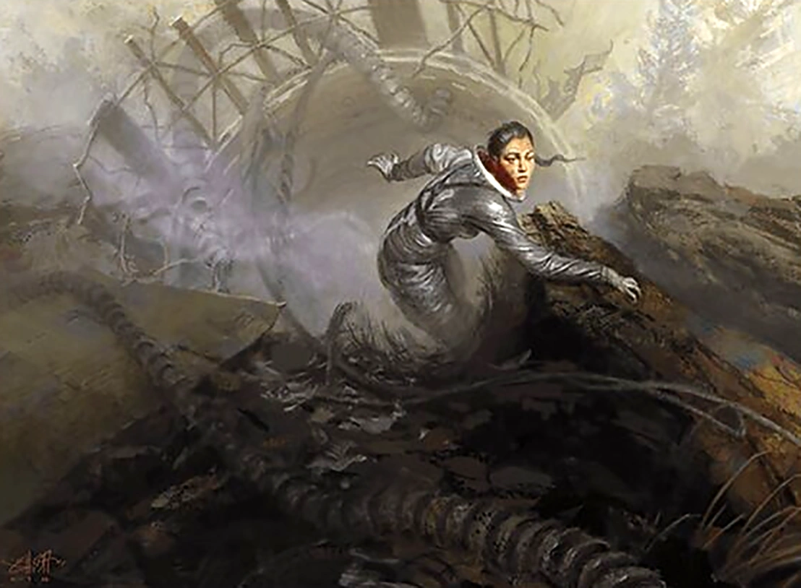

Sofia Daguerre
コマンダー・ダゲール — 宇宙から不時着した元宇宙飛行士
みんなにお別れを言っていたのに…本当にみんないなくなったの。
放送の断片から…ある程度は何が起きたか理解したつもり。たぶん…戦争だったのね。
そしてどういうわけか…これが生き残った世界。今は言葉にすらできないわ。」
概要
コマンダー・ソフィア・ダゲールは、合衆国宇宙管理局（U.S.S.A.）の宇宙飛行士で、2103年に宇宙での冷凍睡眠から目覚めた後、アパラチアに不時着した人物である。
Fallout 76のWastelandersアップデートで同居人としてリクルート可能。
背景
戦前の宇宙飛行士
ソフィア・ダゲールはシカゴ、イリノイ州で生まれ育った。
母親は工場勤めで、製造ラインで破損した製品を幼いソフィアへのお土産として持ち帰っていた。
大学では物理学を専攻し、そこでエマーソン・ヘイルと出会い交際を始めた。
二人は大学院時代にアパラチアの田舎で何度かキャンプをした仲だったが、最終的に別れ、友人関係に落ち着いた。
ソフィアはその後もいくつかの交際をしたが、いずれも「大したことはなかった」と語っている。
大学卒業後、ワシントンD.C.に移り、U.S.S.A.の宇宙飛行士プログラムに何度か応募した末に合格した。
U.S.S.A.本部近くの小さなアパートに住んでいたが、キャリアが忙しくほとんど家にいなかった。
自由時間には近所のコミックショップに通い、「アンストッパブルズ」シリーズの最新号を読むのが趣味だった。
子どもの頃はミステリーの女主人の助手になるのが夢だったという。
「でも次善の策として、宇宙に行ったわ」と本人は語っている。
U.S.S.A.でヘイルと再会した後、ソフィアは自分が知らないうちに「ディープ・スリープ・プロジェクト」という長期人工冬眠実験に参加させられていた。
ソフィアとクルーメンバーのバーナード、ノワク、リーは、1970年に船が軌道に到達した直後に強制的に冬眠状態に入れられた。
当初は2075年に覚醒する予定だったが、2080年までの延長が認められた。
冬眠中の宇宙飛行士たちは軌道上に放置され、2077年10月23日の大戦の核の炎から知らずに逃れたのだった。
地球へ、ダゲール
U.S.S.A.がアメリカ合衆国もろとも消滅した後、ソフィアたちは船がやがて軌道を外れて2103年にアパラチアの沼地地帯に墜落しなければ、長い間冷凍睡眠のままだったかもしれない。
重傷を負いながらも生き延びたソフィアは、世界に何が起きたかまったく知らないまま墜落現場から何とか這い出し、フリー・ステイツが使っていた放棄されたバンカーに辿り着いた。
そこで回復を待っていたところ、Vault 76の住人に発見される。
大戦による世界の滅亡を知らされたソフィアは、行方不明のクルーメンバーの捜索と、C.A.M.P.への一時的な滞在、そしてU.S.S.A.コンソールの組み立てへの協力を住人に依頼する。
クルーの捜索はやがて、ディープ・スリープ・プロジェクトの真の目的を暴くことになった。
それは被験者の脳とシュガー・グローヴに設置されたA.I.「ATHENA」との間にリンクを形成し、接続された全被験者の視点からあらゆることを監視できる監視A.I.を作ることだった。
クルーメンバーたちはプロジェクトの本来の目的を知っていたが、軌道上で強制的に参加させられた。
ソフィアの頻繁な頭痛と偏頭痛はATHENAとの接続が原因であり、ソフィアは最終的にVault 76の住人にATHENAへの対処を依頼し、自分の症状を治すことを求めた。
プレイヤーとのインタラクション
ソフィア・ダゲールはエッセンシャルNPCであり、同居人としてC.A.M.P.に配置できる。
専用家具は「U.S.S.A.コンソール」。
性別を問わずロマンス可能で、Fallout 76ではベケットとアデレートと並んで恋愛関係を築ける3人の同居人のうちの一人。
プレイヤーが最終クエストラインで頭痛を治すことに成功した場合、ソフィアはC.A.M.P.で頭痛について愚痴を言わなくなる。
治せなかった場合は、永続的に頭痛と悪夢について言及し続ける。
提供クエスト
- Crash Landing — 最初の出会い
- The Woman Who Fell to Earth — ソフィアの正体を知る
- One Small Step — U.S.S.A.コンソールの組み立て
- In Case of Emergency — クルー捜索
- Bring Home the Beacon — ビーコンの回収
- The Universe Conspires — 宇宙の陰謀
- Hope Remains — 希望は残る
- Search and Destroy — 捜索と破壊
- Heavy Eyes — 重い瞼
- Patently False — 明らかな偽り
- Privacy Violation — プライバシー侵害
- Contractually Obfuscated — 契約による隠蔽
- Boot Camp — ブートキャンプ
- Past Expiration — 期限切れ
- No Brainer — 当然の選択
- Calling Long Distance — 長距離通信
- Who Sat Down Beside Her — 彼女のそばに座った者
- Lab Rat — 実験台
- Mission Out-of-Control — 制御不能のミッション
ラジアントクエスト
- Close Encounter — 遭遇
- Data Driven — データ駆動
- Expired Contract — 期限切れの契約
- Faint Signal — 微弱な信号
- Glitchcraft — グリッチの技
- Space Limitations — 宇宙の限界
装備
- 宇宙服（ネームタグなし、ユニーク）
- 10mmピストル
備考
- ソフィアは性別を問わずプレイヤーの恋人になれる。これはFallout 76のベケットやFallout 4のロマンス可能なコンパニオンと同様。
- ソフィアはネームタグが外されたユニークな宇宙服を着用している。
- 軌道上での滞在は「ザ・スペース・ステーション」と呼んでおり、正式名称については一切触れない。しかし、沼地地帯で発見される脱出ポッドの残骸はValiant-1号と同一の構造であり、それがソフィアの「スペース・ステーション」と同一であることが示唆されている。
- スキャナー技術に関するテクニカルエキスパートであり、かなりのナードでもある。
- 「グログナックとルビーの廃墟」の東海岸チャンピオンだった。
- アンストッパブルズのコミックコレクションを持っており、宇宙にも持って行ったが、混乱の中で失ってしまった。ミステリーの女主人がお気に入りで、子どもの頃は彼女のために働きたかった。
- ベジタリアンである。これはグラムがプレイヤーのC.A.M.P.を訪れてソフィアと会話した際に明かされる。
- 人生の大半でペットのカメを飼っていた。
名言集
登場作品
ソフィア・ダゲールはFallout 76のWastelandersアップデートにのみ登場する。
舞台裏
- ソフィアにはクエスト「Thicker Than Water」用の未使用台詞がいくつか録音されている。ロニーや兄弟の存在に言及しており、ベケットの物語の一部がもともとソフィアの物語と絡み合っていたことが示唆されている。
- 「永遠に宇宙を漂っている悪夢」という台詞は、その奇妙な言い回しのために頻繁に口にするソフィアのネタとしてFallout 76コミュニティでジョークになっている。後に追加された同居人スティーブン・スカーベリーが「暗闇の中を永遠に漂っている悪夢」とほぼ同じ台詞を言うことで、このネタが受け継がれた。
ギャラリー








Magic: The Gathering


ソフィア・ダゲールは、Fallout 76の同居人の中でも群を抜いてストーリーが練り込まれているキャラクターですね。
2070年に宇宙に飛び立って、目を覚ましたら世界が核で焼かれてた、っていう設定がそもそも映画一本撮れるレベル。
放棄されたバンカーで一人きりで回復を待ってたときの心細さとか、クルーが生きてるかも分からない不安とか、想像しただけで胸が痛みます。
ナードな面もすごく魅力的で、「グログナックとルビーの廃墟」の東海岸チャンピオンだったり、ミステリーの女主人の助手になりたかったり、宇宙飛行士なのにコミック好きっていうギャップが最高です。
グラムとの会話シーンは何度見ても笑えますね。「チャリーを宇宙に連れて行ってくれ！」「ムーン・ミート？」の畳み掛けに対して、ソフィアが真面目に答えようとしてるのがもう可笑しい。
「この悪夢がどうしても消えないの」があまりにも頻繁に言われすぎてコミュニティのネタになってるのも、愛されてる証拠ですよね。
ATHENAとの接続を解除するクエストラインは、陰謀論的な展開も含めてかなり読み応えがあって、同居人クエストの中では最も壮大なスケールだと思います。
This article was created by translating and editing Sofia Daguerre from Nukapedia: The Fallout Wiki.
Licensed under the Creative Commons Attribution-Share Alike License (CC BY-SA 3.0).
コミュニティ維持のため、寄付を受け付けております。
> COMMENTS